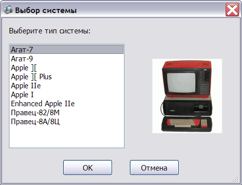
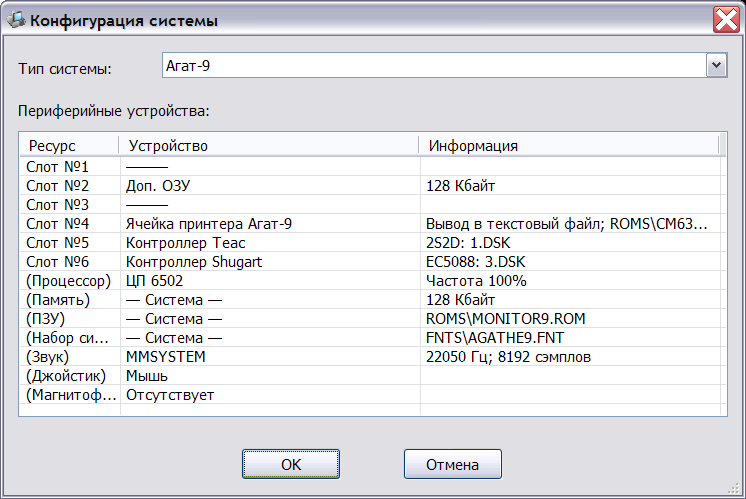
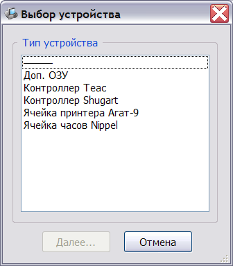
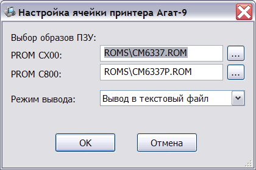
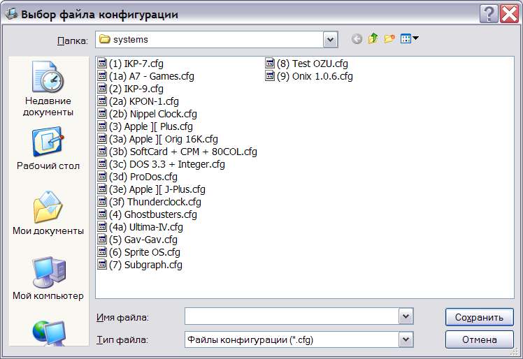

Создание новой конфигурации выполняется нажатием кнопки "Создать" главного окна эмулятора.
После этого будет предложено выбрать тип системы:

Выбрав тип системы и подтвердив выбор нажатием кнопки "ОК", эмулятор открывает окно настройки системы:

В этом окне указывается выбранный тип системы и список доступных ресурсов эмулируемой системы.
Верхнюю часть списка составляют ресурсы, связанные с разъёмами расширения (Слот №...). Этим ресурсам может быть поставлен в соответствие модуль эмулятора, имитирующий соответствующее аппаратное устройство, что соответствует установки ячейки расширения в соответствующий разъём.
Для изменения содержимого слота необходимо дважды щёлкнуть левой кнопкой мыши на его название. После этого будет открыто окно выбора устройства, содержимое которого будет зависеть от типа системы:

Верхний элемент списка (прочерк) означает удаление текущего устройства из слота расширения.
После выбора устройства и нажатия кнопки "Далее" выполняется переход к конфигурированию выбранного устройства, если это предусмотрено его эмулирующем модулем, например:

После завершения конфигурирования, настроенное устройство добавляется в список устройств системы.
Для переконфигурирования уже настроенного устройства необходимо дважды щёлкнуть левой кнопкой мыши на названии устройства (колонка "Устройство").
В колонке "Информация" приводятся краткие сведения о текущей конфигурации устройства в зависимости от его типа.
Названия ресурсов, заключённые в скобки, например, "(Процессор)" относятся к системным устройствам, которые не могут быть удалены. Набор системных устройств зависит от типа системы.
Для конфигурирования системных устройств необходимо нажать дважды на любом столбце таблицы устройств. При этом откроется окно настройки соответствующего устройства, например:
Для сохранения созданной конфигурации необходимо нажать кнопку "ОК" в окне настройки системы, затем в открывшемся окне сохранения конфигурации ввести её имя:

После сохранения системы, она должна появиться в списке систем главного окна эмулятора.
См. также: Изменение конфигурации, Главное окно эмулятора, Главное меню